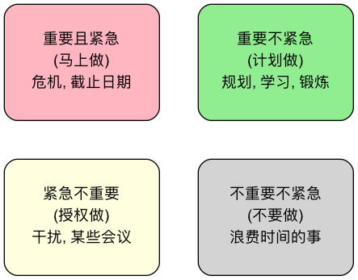

艾森豪威尔矩阵¶
在日常工作和生活中，我们常常被淹没在无穷无尽的待办事项（To-do List）的海洋中，感到忙碌不堪，却又似乎一事无成。这种“穷忙”状态的根源，往往在于我们混淆了“紧急的（Urgent）”事情和“重要的（Important）”事情，并习惯性地优先处理那些不断“鸣笛”的紧急事务，而忽略了那些对长期目标真正重要的事情。艾森豪威尔矩阵（The Eisenhower Matrix），也称为紧急/重要矩阵，是一个旨在解决这一普遍困境的、极其简单而深刻的个人优先级管理工具。
该方法据传由美国第34任总统德怀特·艾森豪威尔（Dwight D. Eisenhower）所创，他曾说过：“我面临两种问题：紧急的和重要的。紧急的往往不重要，而重要的从不紧急。” 艾森豪威尔矩阵的核心，就是通过将所有任务，按照“重要性”和“紧急性”这两个维度，进行清晰的四象限划分，从而帮助我们识别出真正应该投入时间和精力的事务，并为不同的任务，制定出不同的处理策略。它是一个能让我们从“被动救火”转向“主动规划”的强大思维框架。
矩阵的四个象限¶
艾森豪威尔矩阵将所有任务划分为四个逻辑清晰的象限，并为每个象限提供了明确的行动指南。


-
第一象限：重要且紧急（The Quadrant of Crises）
- 内容：这些是必须立即处理的“危机”和“紧要问题”。它们既对你的目标至关重要，又有迫在眉睫的时间限制。
- 策略：立即去做（Do First）。你需要集中精力，优先解决这些事务。
- 目标：一个高效的人，应该通过在第二象限的努力，来尽可能地减少第一象限事务的数量。
-
第二象限：重要但不紧急（The Quadrant of Quality & Leadership）
- 内容：这是最具价值的象限。这些事情对你的长期目标、个人成长和生活质量有着深远的影响，但它们通常没有一个迫切的截止日期。例如，学习、规划、建立关系、锻炼身体、改进流程等。
- 策略：计划去做（Schedule）。你需要主动地、有意识地为这些事情，在你的日历上预留出专门的时间来处理。
- 目标：成功人士会将大部分时间（60%-80%）投入到这个象限，因为这才是真正能带来长期回报的地方。
-
第三象限：紧急但不重要（The Quadrant of Deception）
- 内容：这是最具欺骗性的象限。这些事情往往会打着“紧急”的旗号，来抢夺你的注意力（例如，一个突然的电话、大部分的会议、别人的请求），但它们对你自己的核心目标并无太大贡献。
- 策略：授权去做（Delegate）。思考一下，这些事是否可以委婉地拒绝？是否可以授权给他人处理？是否可以用更高效的方式（如用一封邮件代替一次会议）来解决？
- 目标：学会对这个象限的事务说“不”，是提升个人效率的关键。
-
第四象限：不重要不紧急（The Quadrant of Waste）
- 内容：这些是纯粹浪费时间的活动，对你的任何目标都毫无益处。
- 策略：尽量别做（Delete/Eliminate）。你需要有意识地识别并减少花在这些事情上的时间。
- 目标：每个人都需要适当的休息和放松，但要警惕自己是否无意识地将大量时间消耗在了这个象限。
如何应用艾森豪威尔矩阵¶
-
第一步：清空大脑，列出所有任务
将你脑中所有需要做的事情，无论大小，都写在一张清单上。
-
第二步：评估每个任务的重要性和紧急性
- 评估重要性：问自己，“做这件事，是否能让我更接近我的长期目标（年度目标、人生目标）？”
- 评估紧急性：问自己，“这件事是否有一个明确的、迫近的截止日期？它是否需要我立即做出反应？”
-
第三步：将任务填入四个象限
根据评估结果，将清单上的每一项任务，都放入矩阵中对应的象限里。
-
第四步：根据象限策略，规划你的行动
- 首先处理第一象限的危机。
- 然后，将你的主要时间和精力，主动地规划给第二象限的事务。
- 想办法减少、授权或拒绝第三象限的事务。
- 有意识地避免陷入第四象限。
-
第五步：定期回顾与调整
每周或每天，都对你的任务矩阵进行一次回顾和调整。一个有效的时间管理者，他的第一象限应该是相对空的，因为他通过在第二象限的深耕，已经提前预防了大多数危机的发生。
应用案例¶
案例一：一位项目经理的一天
- 第一象限：处理一个导致项目阻塞的线上Bug；向即将到期的CEO汇报项目关键进展。
- 第二象限：规划下个迭代的核心功能；与团队核心成员进行一对一沟通，了解其成长和困难；学习一个新的项目管理工具。
- 第三象限：回复一些抄送给自己的、信息量不大的邮件；参加一个与自己项目关联不大的部门会议。
- 第四象限：无目的地刷新行业新闻网站。
- 行动：他会先集中精力修复Bug，然后主动地在下午为自己预留出2个小时的“免打扰时间”，来专注于第二象限的规划工作。
案例二：一个学生准备期末考试
- 第一象限：明天就要提交的课程论文。
- 第二象限：为三周后的核心专业课期末考试，制定一个详细的复习计划；整理和复习本学期的知识重点。
- 第三象限：学生会的一个非紧急的、希望他帮忙设计海报的请求。
- 第四象限：漫无目的地打一晚上游戏。
- 行动：优秀的学生会优先完成论文，然后将大部分时间投入到系统的复习计划中，并委婉地拒绝学生会的请求，或者推荐更合适的人选。
案例三：一家初创公司的CEO
- 第一象限：处理一个即将耗尽公司现金流的财务危机。
- 第二象限：与潜在的战略投资人建立联系；思考公司下一代产品的战略方向；建立和培养核心团队文化。
- 第三象限：接受一个非主流媒体的、耗时很长的采访请求。
- 第四象限：沉迷于在社交媒体上与人就无关紧要的话题进行辩论。
- 行动：一位卓越的CEO，即使在处理日常危机时，也必须有意识地、雷打不动地将自己每周最宝贵的时间（例如，每周三的上午）投入到决定公司生死的第二象限事务中。
艾森豪威尔矩阵的优势与挑战¶
核心优势
- 简单、直观、易于上手：框架非常清晰，任何人都可以快速地应用到自己的日常任务管理中。
- 转变思维，聚焦重要之事：最核心的价值在于，它强迫我们区分“紧急”与“重要”，将我们的思维模式从“被动应付”，转变为“主动规划”。
- 提升长期效率与成就感：通过持续地投入第二象限，我们能够不断地提升自己的能力、减少未来的危机，从而进入一个良性循环，获得真正的、长期的成就感。
潜在挑战
- 对“重要性”的判断是主观的：如果一个人没有清晰的长期目标，那么他就很难准确地判断一件事是否“重要”，这可能导致他将大量第三象限的事务，误判为第一象限。
- 低估了第二象限的执行难度：知道第二象限重要是一回事，但要在日常中，抵制住第一和第三象限的巨大诱惑，真正地为第二象限投入时间和精力，需要极大的自律和意志力。
延伸与关联¶
- GTD (Getting Things Done)：GTD提供了一套更全面、更系统的工作流管理体系，用于清空和组织你所有的“杂事”。而艾森豪威尔矩阵，则可以作为GTD中，“执行”环节进行优先级判断的强大思考工具。
- 帕累托分析（80/20法则）：与艾森豪威尔矩阵的理念高度契合。通常，那些能带来80%回报的、20%的关键活动，都位于第二象限。
来源参考：该方法论虽然被广泛归功于德怀特·艾森豪威尔，但将其系统性地提炼并普及开来的，是著名管理学家史蒂芬·柯维（Stephen R. Covey）。他在其全球畅销书《高效能人士的七个习惯》（The 7 Habits of Highly Effective People）中，对这个矩阵进行了详细的阐述，并将其作为“要事第一（Put First Things First）”这一核心习惯的实践工具。